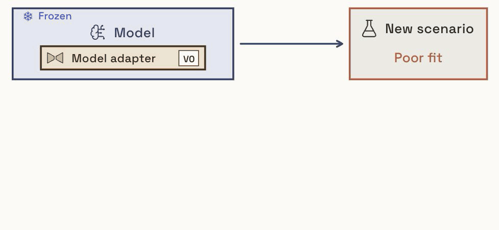
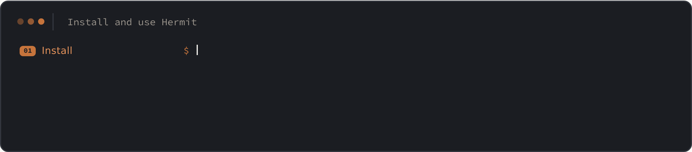
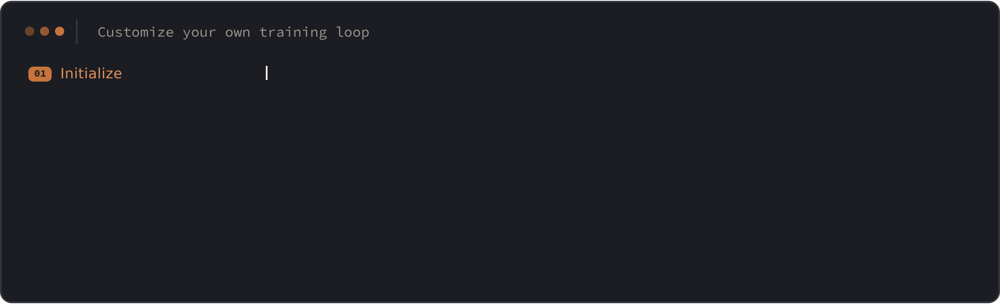

Train, evaluate and deploy harness adapters: trainable external harnesses that adapt an existing agent to new scenarios without touching its harness or model.

Hermit is an open-source framework with one training loop for harness adapters. Bring your tasks and feedback; choose a learning method or write your own. It supports, without task-specific plumbing:
| Need | Agents meet scenarios their harness was not written for: a new domain, a new tool, a stream of tasks whose rules only show in the feedback. They should keep learning in deployment. |
| Today | Two ways to adapt an agent: edit its harness by hand, which does not scale and does not learn, or fine-tune the model, which is expensive, opaque, and tied to one model. |
| Why | A harness adapter puts the learnable part outside the agent: an instruction file, skills, tools, a world model of the venue. The base stays frozen, the adapter trains from feedback, and the same adapter moves between compatible harnesses. |



An Evolver is a few hundred lines: it receives the step's learning material and the adapter's working copy, and returns a proposal. Everything else, from sandboxing to the git tree to evaluation, is the framework's.
All runs: GLM 5.3 Flash as the acting model, reasoning effort high; the learner is a Codex session with the same model. Full settings and the trained adapters are in the repository.
| Method | Database · accuracy | Poker · bb/hand |
|---|---|---|
| Stateless (benchmark baseline) | 0.400 | 1.76 |
| In-context (benchmark baseline) | 0.580 | 2.51 |
| Prompt-only adapter, Codex learner | 0.470 | 1.65 |
| MetaWorld Model adapter | 0.795 | 3.08 |
Five orders of each stream, one run per order, mean over orders.
| Method | H · hidden policy | F · fully specified |
|---|---|---|
| Blind (no learning) | 4.5 | 94.3 |
| Best leaderboard method (CH) | 28.7 | 92.0 |
| Prompt-only adapter, Codex learner | 18.8 | 97.1 |
| MetaWorld Model adapter | 45.3 | 98.4 |
| Oracle (policy given) | 89.2 | 95.5 |
retail_l3: 624 serving requests in eight windows, 537 held-out tests. Leaderboard rows are the benchmark's published numbers for the same model.
| Skill | Direct chat | Codex harness |
|---|---|---|
| None | 0.415 | 0.543 |
| SkillOpt's initial skill | 0.465 | 0.564 |
| GEPA in Hermit | 0.564 | 0.595 |
| SkillOpt in Hermit | 0.576 | 0.628 |
The SkillOpt paper's setting: 50 / 24 / 172 split, exact match, 172 test questions × 3 passes.
# Python 3.11+ and git git clone https://github.com/Infini-AI-Lab/hermit.git && cd hermit python3 -m venv .venv && source .venv/bin/activate pip install -e . # train an adapter, evaluate it, deploy it into your agent hermit train --config run.yaml hermit eval --config run.yaml --adapter final hermit deploy --adapter my-adapter --workspace my-project --host codex hermit convert --adapter my-adapter --output plugin --target claude-code
Then: train with an API model · run OfficeQA · bring your own task · build a new method